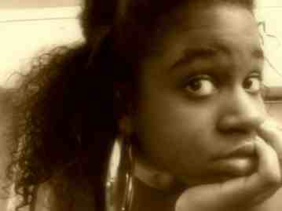

Hi my name is Talisha and I created this as my own version of natural hair blogs. However, to start it will mostly pertain to people with hair types similar to my own, shown above and below. These are types 3c, 4a and 4b. If you are not sure click the follwing link which is also one of my inspirations to create this site. naturallycurly.com I have had natural unprocessed(no perms, coloring or other chemicals) hair since I was 16. However, I did not begin letting my natural curls show until I was 18 and until now that was not often, because I did not know how to style or take care of my natural curls. So I kept my hair straightened and in a pony tail. Recently, some friends had me do some research which led me to being inspired and wantin to show off the natural texture of my hair. Hopefully this site, will encourage others like me to do the same and try something new. Enjoy!
